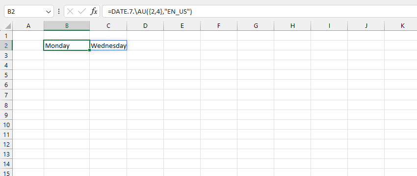
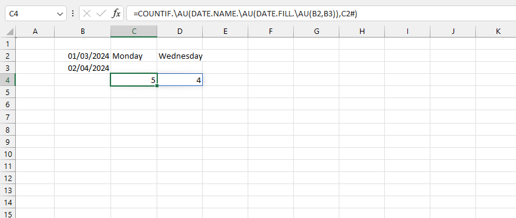

VD1: Trả về tên Thứ 2 và Thứ 4 bằng tiếng Anh.
VD2: Đếm số thứ 2 và thứ 4 trong khoảng thời gian chỉ định.
=COUNTIF.\AU(DATE.NAME.\AU(DATE.FILL.\AU(B2,B3)),C2#)
Nếu sử dụng hàm WEEKDAY (mặc định ngày bắt đầu từ 1, {2,4} tương ứng T2 và T4).
=COUNTIF.\AU(WEEKDAY(DATE.FILL.\AU(B2,B3)),{2,4})
Đối số [format-tag] có thể tra cứu bằng hàm LANGUAGE.ID
Related function
MONTH.ADD Trả về ngày tháng sau số tháng xác định.
YEAR.ADD Trả về ngày tháng sau số năm xác định.
CALENDARS Trả về lịch 2D một năm bất kỳ .
MODE Trả về phần tử lặp lại nhiều nhất trong mảng cho trước.
Return to Home